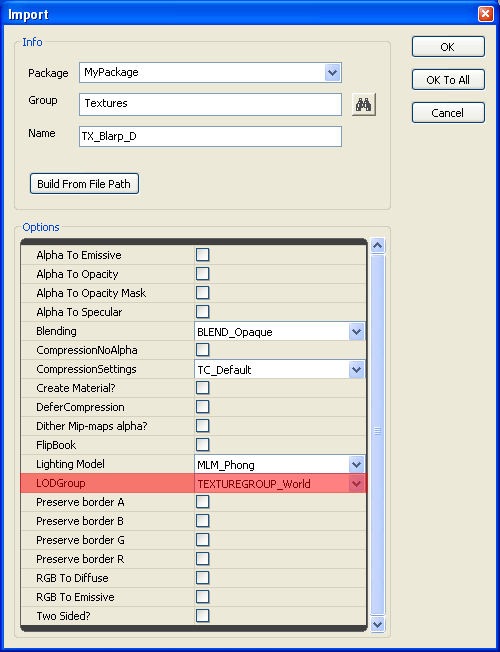
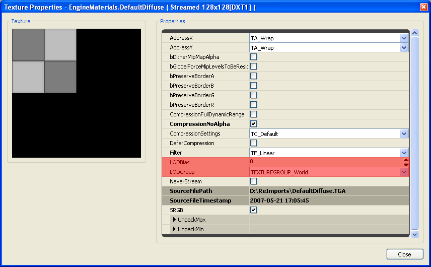

UDN
Search public documentation:
TextureSupportAndSettingsJP
English Translation
中国翻译
한국어
Interested in the Unreal Engine?
Visit the Unreal Technology site.
Looking for jobs and company info?
Check out the Epic games site.
Questions about support via UDN?
Contact the UDN Staff
中国翻译
한국어
Interested in the Unreal Engine?
Visit the Unreal Technology site.
Looking for jobs and company info?
Check out the Epic games site.
Questions about support via UDN?
Contact the UDN Staff
テクスチャサポートおよび設定
概要
テクスチャ解像度
最新のDirectXビデオアダプターおよびゲームコンソールは、1x1 から2048x2048 、最大8192x8192までのさまざまなテクスチャ解像度をサポートしています。特定のハードウェアデバイスがサポートする最大テクスチャ解像度は、メーカーおよびモデルによって異なります。また、利用可能なテクスチャメモリプールのサイズもハードウェアによって異なります。
ワールドジオメトリやユーザーインターフェースなど、さまざまなエリアでレンダリングされるテクスチャ解像度の維持のため、Unreal Engine 3 には多数の機能や設定が搭載されています。
エンジンテクスチャ解像度の限界
Src\D3D9Drv\Src\D3D9Device.cpp
Src\Engine\Inc\RHI.h
Src\Engine\Inc\UnTex.h
Src\Engine\Src\RHI.cpp
Src\Engine\Src\TextureCube.cpp
圧縮テクスチャメモリ要件
解像度から圧縮率までが一定なことから、ここにリストされていないテクスチャ解像度のメモリ要件を算出するには、解像度率を乗算するだけです。例えば、1024x512テクスチャは1024x1024の2分の1のメモリ要求となります。
この表データは、Box-Filterミップマップ生成およびDirectX Texture Compressionを使用したATIのCompressonatorで作成されたテクスチャからコンパイルされました。
| 解像度 | 1x1からの総ミップマップ数 | DXT1 | DXT5 |
| 16x16 | 5 ミップマップ | 312 バイト | 496 バイト |
| 32x32 | 6 ミップマップ | 824 バイト | 1.48kb （1,520 バイト) |
| 64x64 | 7 ミップマップ | 2.80kb （2,872 バイト） | 5.48kb （5,616 バイト） |
| 128x128 | 8 ミップマップ | 10.8kb （11,064 バイト） | 21.4kb （22,000 バイト） |
| 256x256 | 9 ミップマップ | 42.8kb （43,832 バイト) | 85.4kb （87,536 バイト） |
| 512x512 | 10 ミップマップ | 170kb （174,904 バイト） | 341kb （349,680 バイト） |
| 1024x1024 | 11 ミップマップ | 682kb （699,192 バイト） | 1.33MB （1,398,256 バイト） |
| 2048x2048 | 12 ミップマップ | 2.66MB （2,796,344 バイト） | 5.33MB （5,592,560 バイト） |
| 4096x4096 | 13 ミップマップ | 10.6MB （11,184,952 バイト） | 21.3MB （22,369,776 バイト） |
| 8192x8192 | 14 ミップマップ | 42.6MB （44,739,384 バイト） | 85.3MB （89,478,640 バイト） |
法線マップテクスチャフォーマット
エンジンConfig TextureGroupプロパティ
コンフィギュレーション設定ファイルの一連のソースは、 [SystemSettings] セクションの「UnrealEngine3\Engine\Config\BaseEngine.ini」ファイルにあります。
ゲームの開発をするにあたり、「[My] Documents\My Games\[your_game]\Config\[your_game]Engine.ini」ファイルは、「Engine\Config\」 フォルダにある基本プロパティのミラーセットを格納し、大抵においてユーザー仕様の設定へと変更されたコピーです。 Unrealエディタとゲーム内に、TextureGroup項目の独自のセットがあることに留意ください。これらの2つのセットは、コンフィギュレーションファイルの [SystemSettingsEditor] と [SystemSettings] セクションにそれぞれ格納されています。 「BaseEngine.ini」ファイルにあるTextureGroup設定項目はこれに似ています。古いQAバージョンは、各設定にMinMagFilterおよびMipFilterプロパティを含んでいない恐れがありますのでご注意ください。 TEXTUREGROUP_World=(MinLODSize=1,MaxLODSize=4096,LODBias=0,MinMagFilter=aniso,MipFilter=point)
TEXTUREGROUP_WorldNormalMap=(MinLODSize=1,MaxLODSize=4096,LODBias=0,MinMagFilter=aniso,MipFilter=point)
TEXTUREGROUP_WorldSpecular=(MinLODSize=1,MaxLODSize=4096,LODBias=0,MinMagFilter=aniso,MipFilter=point)
TEXTUREGROUP_Character=(MinLODSize=1,MaxLODSize=4096,LODBias=0,MinMagFilter=aniso,MipFilter=point)
TEXTUREGROUP_CharacterNormalMap=(MinLODSize=1,MaxLODSize=4096,LODBias=0,MinMagFilter=aniso,MipFilter=point)
TEXTUREGROUP_CharacterSpecular=(MinLODSize=1,MaxLODSize=4096,LODBias=0,MinMagFilter=aniso,MipFilter=point)
TEXTUREGROUP_Weapon=(MinLODSize=1,MaxLODSize=4096,LODBias=0,MinMagFilter=aniso,MipFilter=point)
TEXTUREGROUP_WeaponNormalMap=(MinLODSize=1,MaxLODSize=4096,LODBias=0,MinMagFilter=aniso,MipFilter=point)
TEXTUREGROUP_WeaponSpecular=(MinLODSize=1,MaxLODSize=4096,LODBias=0,MinMagFilter=aniso,MipFilter=point)
TEXTUREGROUP_Vehicle=(MinLODSize=1,MaxLODSize=4096,LODBias=0,MinMagFilter=aniso,MipFilter=point)
TEXTUREGROUP_VehicleNormalMap=(MinLODSize=1,MaxLODSize=4096,LODBias=0,MinMagFilter=aniso,MipFilter=point)
TEXTUREGROUP_VehicleSpecular=(MinLODSize=1,MaxLODSize=4096,LODBias=0,MinMagFilter=aniso,MipFilter=point)
TEXTUREGROUP_Cinematic=(MinLODSize=1,MaxLODSize=4096,LODBias=0,MinMagFilter=aniso,MipFilter=point)
TEXTUREGROUP_Effects=(MinLODSize=1,MaxLODSize=4096,LODBias=0,MinMagFilter=linear,MipFilter=point)
TEXTUREGROUP_EffectsNotFiltered=(MinLODSize=1,MaxLODSize=4096,LODBias=0,MinMagFilter=aniso,MipFilter=point)
TEXTUREGROUP_Skybox=(MinLODSize=1,MaxLODSize=4096,LODBias=0,MinMagFilter=aniso,MipFilter=point)
TEXTUREGROUP_UI=(MinLODSize=1,MaxLODSize=4096,LODBias=0,MinMagFilter=aniso,MipFilter=point)
TEXTUREGROUP_LightAndShadowMap=(MinLODSize=1,MaxLODSize=4096,LODBias=0,MinMagFilter=aniso,MipFilter=point)
TEXTUREGROUP_RenderTarget=(MinLODSize=1,MaxLODSize=4096,LODBias=0,MinMagFilter=aniso,MipFilter=point) 「＜your_game>Engine.ini」にあるTextureGroup設定は通常これに似ています。LOD設定は、通常ゲームデザインおよび対象プラットフォームにより要求された範囲内で設定されますのでご注意ください。 TEXTUREGROUP_World=(MinLODSize=256,MaxLODSize=1024,LODBias=1)
TEXTUREGROUP_WorldNormalMap=(MinLODSize=256,MaxLODSize=1024,LODBias=1)
TEXTUREGROUP_WorldSpecular=(MinLODSize=256,MaxLODSize=1024,LODBias=1)
TEXTUREGROUP_Character=(MinLODSize=256,MaxLODSize=1024,LODBias=0)
TEXTUREGROUP_CharacterNormalMap=(MinLODSize=256,MaxLODSize=1024,LODBias=0)
TEXTUREGROUP_CharacterSpecular=(MinLODSize=256,MaxLODSize=1024,LODBias=0)
TEXTUREGROUP_Weapon=(MinLODSize=256,MaxLODSize=1024,LODBias=0)
TEXTUREGROUP_WeaponNormalMap=(MinLODSize=256,MaxLODSize=1024,LODBias=0)
TEXTUREGROUP_WeaponSpecular=(MinLODSize=256,MaxLODSize=1024,LODBias=0)
TEXTUREGROUP_Vehicle=(MinLODSize=512,MaxLODSize=1024,LODBias=0)
TEXTUREGROUP_VehicleNormalMap=(MinLODSize=512,MaxLODSize=1024,LODBias=0)
TEXTUREGROUP_VehicleSpecular=(MinLODSize=512,MaxLODSize=1024,LODBias=0)
TEXTUREGROUP_Cinematic=(MinLODSize=256,MaxLODSize=4096,LODBias=0)
TEXTUREGROUP_Effects=(MinLODSize=128,MaxLODSize=512,LODBias=1)
TEXTUREGROUP_Skybox=(MinLODSize=512,MaxLODSize=2048,LODBias=0)
TEXTUREGROUP_UI=(MinLODSize=512,MaxLODSize=1024,LODBias=1)
TEXTUREGROUP_LightAndShadowMap=(MinLODSize=512,MaxLODSize=4096,LODBias=0)
TEXTUREGROUP_RenderTarget=(MinLODSize=1,MaxLODSize=4096,LODBias=0)
PC AppCompat バケット
TEXTUREGROUPプロパティ
| MinLODSize | レンダリングされる最小のミップマップサイズ。ピクセルで指定されている。1から8192の範囲で2の累乗で表示。MaxLODSize以下でなければならない。 |
| MaxLODSize | レンダリングされる最大のミップマップサイズ。ピクセルで指定されている。1から8192の範囲で2の累乗で表示。MinLODSize以上でなければならない。 |
| LODBias | レンダリングにアップロードする前にオフセットして、ミップマップレベル数を決定する正または負の値。MinLODSizeおよびMaxLODSizeの範囲内で数値を制限。 |
| MinMagFilter | テクスチャがGPUによって縮小または拡大された時、テクスチャフィルタータイプを指定する。下記のチャートを参照。 |
| MipFilter | テクスチャを遠くから、またはグレージング角から眺めた際に、GPUが二つのミップマップをブレンドするべきか否か指定する。下記のチャートを参照。 |
| NumStreamedMips | ストリームインまたはアウトが許可されるミップマップの数。テクスチャが10のミップレベルを持ちNumStreamedMipsが 2 の場合、最上位の2つのミップレベルのみがストリームインまたはアウトが許可されます。これによって8～10のミップマップがいつでもメモリに常駐します。 NumStreamedMipsを 0に設定することは、ミップマップはストリーミングされず、このLODグループを使用しているテクスチャがいつも全て読み込まれることを意味します。NumStreamedMipsを -1 に設定することは、全てのミップレベルがストリーミングされることを許可します（引き続きその他の制限も適用されます）。NumStreamedMipsは、デフォルト値が -1 となる任意の設定です。 |
| MinMagFilter | MipFilter | フィルタタイプ |
| point | - | Point |
| linear | point | Bilinear |
| linear | - | Trilinear |
| aniso | point | Anisotropic Point |
| aniso | - | Anisotropic Linear |
TextureGroup、LODGroup、LODBias
LODBiasは、 レンダリング用にどのミップマップが選択されるかを バイアス またはオフセットします。LODBiasは、LODGroupが最小/最大範囲になる前に演算されます。TextureプロパティにあるLODBiasは、最終的に使用されたLODBias値を測定するため、TextureGroupのLODBiasに追加されます。
LODBiasが0の場合は、主要(ネイティブ)のテクスチャ解像度となります。LODBiasが1の場合は、テクスチャの最初のミップマップで、LODBiasが2の場合は、第二のミップマップです。例えば、LODBiasが1の場合の1024x1024テクスチャは、512x512のミップマップがレンダリング用に選択されます。 各テクスチャ用のTextureプロパティで指定されたLODBiasは、正にも負にもなるためTextureGroupのデフォルトLODBiasをより高い、またはより低いミップマップ値にオフセットしてしまうことがあります。
例えば、TextureGroup LODBiasが0の場合、またはTexture Properties LODBiasが0の場合、LODBias の最終値は0になります。
TextureGroup LODBiasが0でTexture Properties LODBiasが1の場合、LODBiasの最終値は1になります。
TextureGroup LODBiasが1でTexture Properties LODBiasが1の場合、LODBiasの最終値は2になります。
TextureGroup LODBiasが1でTexture Properties LODBiasが-1の場合、LODBiasの最終値は0になります。 最終のLODBiasが計算されると、TextureGroupの最小/最大LODSize範囲内に適合するかどうか、テクスチャミップマップをチェックします。そして必要があればそれを調整します。これは設定された最小/最大LOD 範囲内で、特定のTextureGroupを効率よくクランプする、簡単な「config ini」ファイル変更を可能にします。例えば、LODBiasの値が1である1024x1024テクスチャが512x512のミップマップを使用する場合、上記で示すようなTEXTUREGROUP_World LODGroup 内であれば、TextureGroupの最少/最大LODSize範囲内であるかどうかチェックされます。この場合、最小値が256で、最大値が1024になります。 各ゲームタイトルが独自のTextureGroup設定を持つため、アーティストおよびレベルデザイナーの方は各グループのMinLODSizeおよびMaxLODSizeに気をつけてください。
MaxLODSize が1024の値を持つTextureGroup に2048のテクスチャの値が割り当てられてゲームを出荷した場合、レンダリング品質に何も利益をもたらさないまま、配信出来るパッケージのサイズが増加します。
テクスチャインポートプロパティ
32ビットARGBテクスチャには、DXT5 テクスチャを生成するため、CompressionNoAlpha のチェックをはずしたままにします。 スペキュラおよびオパシティ情報は、通常2つの24ビットDXT1 テクスチャを使用する代わりに、32ビットDXT5 テクスチャのアルファチャンネル内に設置されているのがベストです。2つのDXT1 テクスチャのファイルサイズが、1つのDXT5と同じサイズの時、エンジンでは、DXT1 が2つのTextureSamplerを使用するのに対して、DXT5はTextureSamplers 1つを使用します。ビデオアダプターには通常16のTextureSampler(SM3 およびSM4) があります。
DXT5 テクスチャのアルファチャンネルは、RGBプレーンとして同じ非可逆圧縮のスタイルを使わないため、グレイスケールデータを保持するのにより適しています。 テクスチャがある特定のTextureGroupの最大LOD 値より大きくなければいけない場合、テクスチャサイズをネイティブにサポートし、ミップマップ数を落とさないTextureGroup を必ず選択するようにしてください。 過多な2048や、より大きいテクスチャの使用には気をつけてください。コンソールのサポートを対象とする場合は、特に気をつける必要があります。 TextureGroupsのデフォルト使用をオーバーライドすることで、テクスチャメモリプールに影響を与える可能性があり、複数のシーンテクスチャが強制的にミップマップ数を落として、ぼやけた感じにしてしまうという、ビデオメモリが少ないシステム問題を引き起こす原因となります。 テクスチャのインポート時はTC_NormalMapのCompressionSettingsを選択するなど、適切な付加設定を選択するように気をつけてください。

テクスチャビューアプロパティ
汎用ブラウザでテクスチャをダブルクリックするか、テクスチャ上で右クリックし、ポップアップメニューから[Texture Viewer](テクスチャビューア)を選択します。
